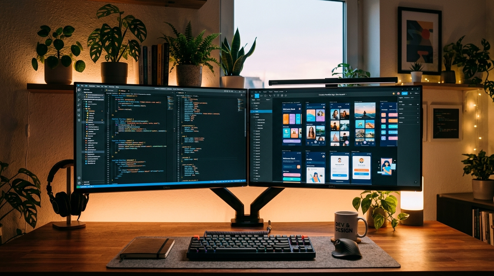
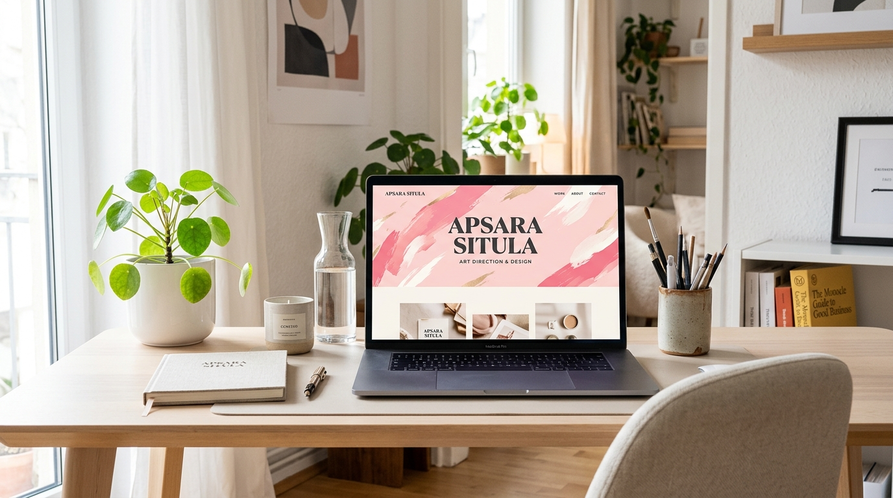

The Journey
So Far.
A timeline of my learning, creativity and growth from 2024 to 2026. Every step has shaped who I am today.


Girl
Bigger
Dreams ♡
Looks
Good
On You ♡
Still Growing
Still Creating ♡
Exploring & Learning
This was the year I began exploring the world of design and technology. I started learning web development, graphic design and different creative tools. Curiosity turned into a real passion, and I began creating my first small projects.
Started Here ♡
Building Skills & Projects
I focused on improving my skills in both web design and graphic design. I worked on various personal projects, including websites, games and visual designs. This year helped me understand design, development and creative problem-solving more deeply.

Better Ideas ♡
Turning Ideas into Reality
I'm now combining everything I've learned to create more polished and meaningful projects — websites, games and graphic designs. This year is about refining my skills, finding my unique style and moving forward as a confident Web Designer & Graphic Designer.

To Come ♡
What I've Gained
These years have given me more than just technical skills — they've shaped my way of thinking, my creativity and my discipline.
Creative Thinking
Learning to see possibilities in simple ideas and turn them into visual realities.
Technical Skills
Building modern, responsive websites and interactive experiences.
Design Sense
Developing a strong eye for composition, color, typography and branding.
Self Growth
Becoming more disciplined, consistent and confident in my abilities.
The Best
Is Yet To Come.
I'm excited to keep learning, creating and taking on new challenges. My goal is to work on more meaningful projects, improve my skills and make an impact through design and technology.